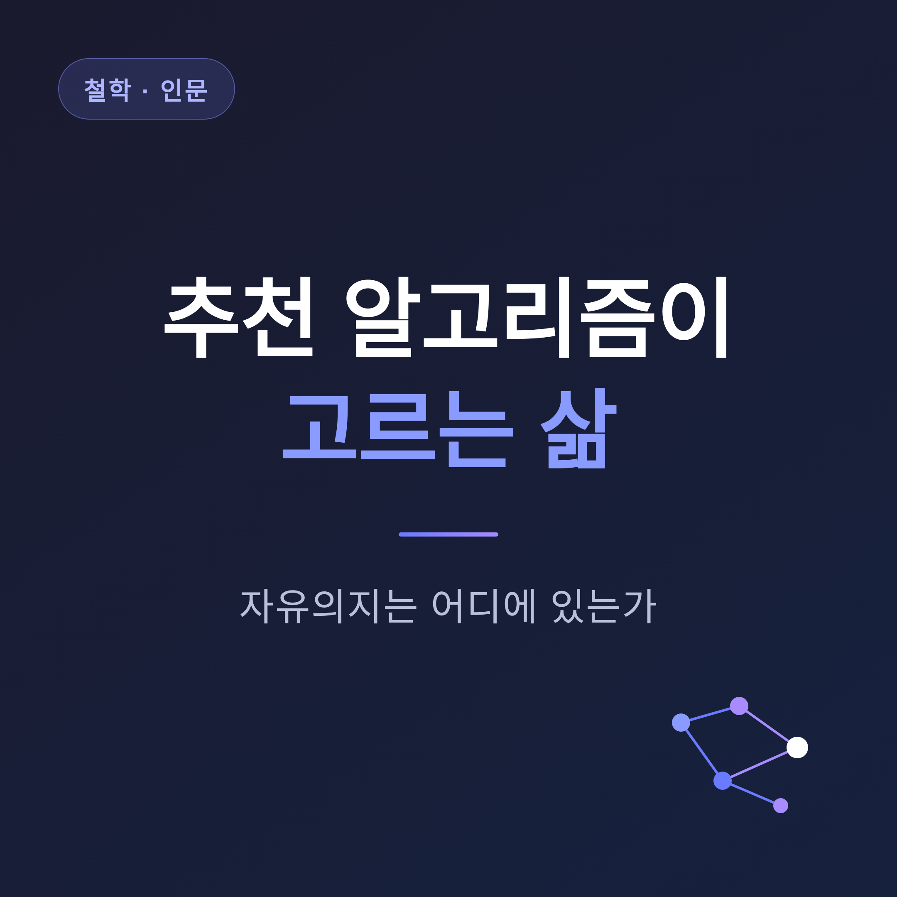
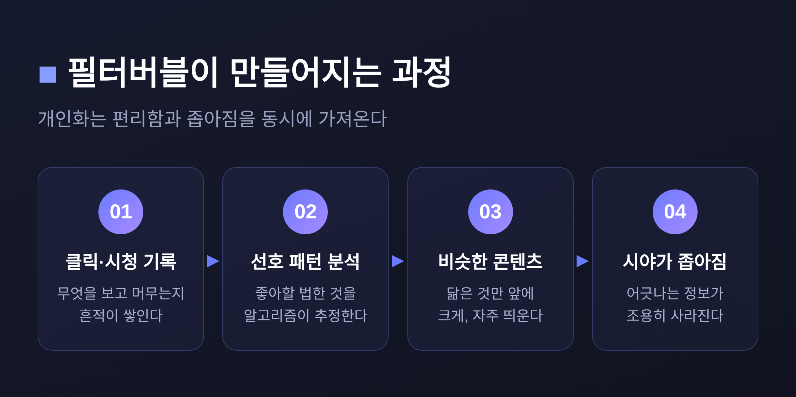
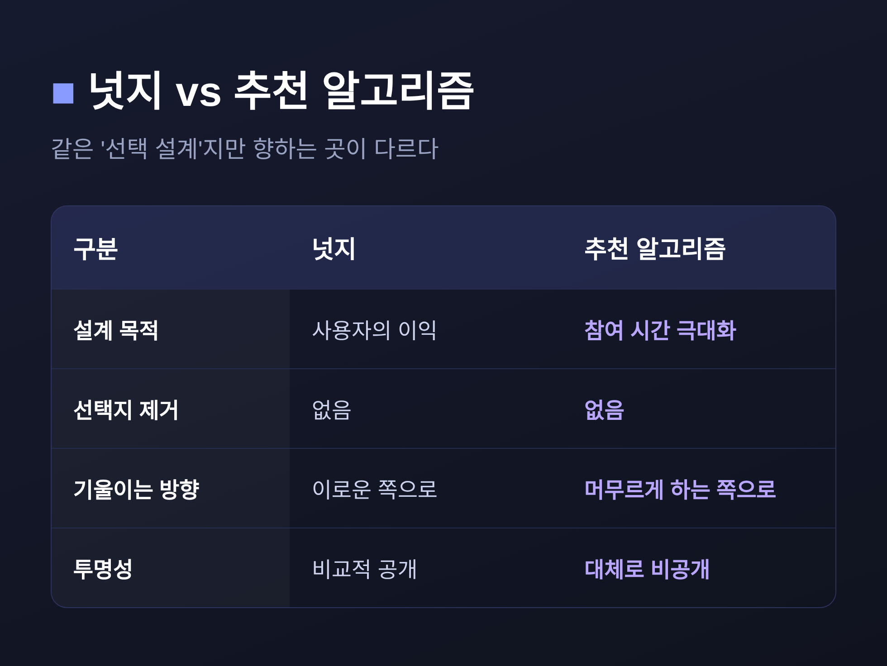
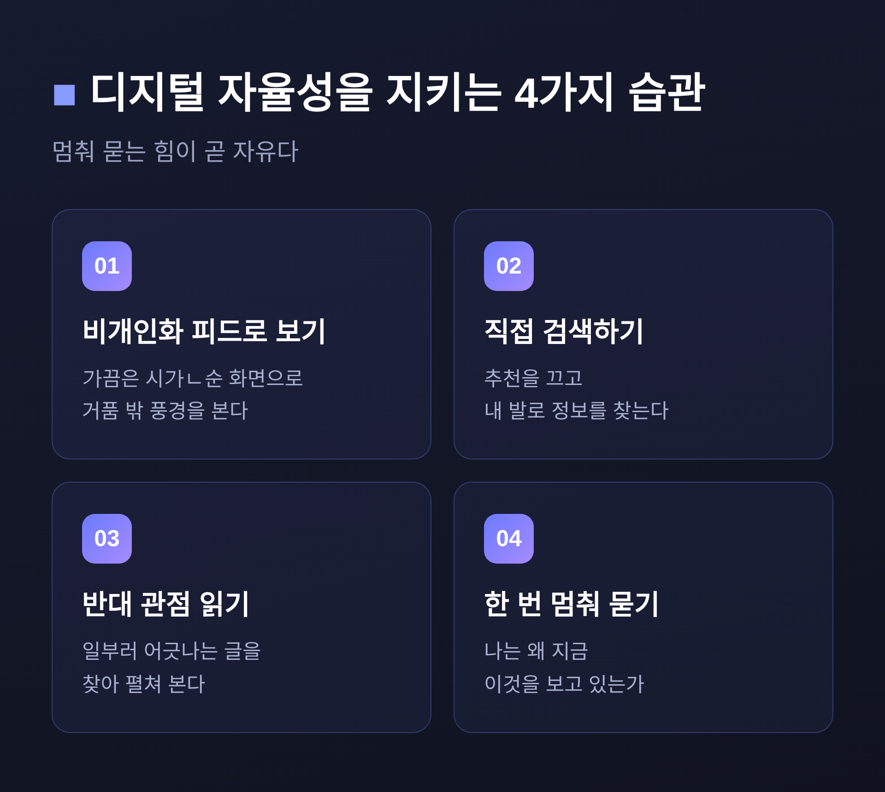

오늘은 추천 알고리즘과 자유의지의 관계를 정리해 보려 합니다.
핵심부터 말씀드리겠습니다. 알고리즘이 우리의 모든 선택을 결정한다고 보기는 어렵습니다. 다만 무엇을 욕구할지 그 입구를 조금씩 기울이는 힘은 분명히 있습니다. 그래서 질문은 "자유의지가 있느냐 없느냐"가 아니라, "내 욕구가 어디서 왔는지 내가 알고 있느냐"로 옮겨갑니다.
이 글에서는 필터버블, 넛지, 결정론과 자유의지 논쟁, 그리고 디지털 자율성까지 차례로 살펴보겠습니다.
먼저 용어부터 짚겠습니다.
필터버블(filter bubble)은 인터넷 활동가 일라이 파리저가 2010년경 만든 말입니다. 그는 2011년 책에서, 알고리즘이 개인화를 밀어붙이면 사람들이 지적으로 고립되고 사회가 쪼개질 것이라 경고했습니다.
파리저의 표현을 빌리면, 필터버블은 "이 알고리즘들이 차려준 나만의 정보 생태계"입니다.
작동 방식은 단순합니다. 내가 무언가를 클릭하고, 영상을 끝까지 보고, 특정 뉴스에 머무는 순간, 그 흔적이 차곡차곡 쌓입니다. 플랫폼은 그 데이터로 내가 좋아할 법한 것을 앞에 더 크게, 더 자주 띄웁니다.
편한 일입니다. 동시에 위험한 일이기도 합니다.
예전엔 신문 한 부를 펼치면 관심 없는 면도 어쩔 수 없이 스쳤습니다. 지금은 관심 없는 것이 아예 화면에 오르지 않습니다. 내 세계관과 어긋나는 정보가 조용히 사라지는 셈입니다.

추천 알고리즘의 정체를 이해하려면 '넛지(nudge)'라는 개념이 도움이 됩니다.
넛지는 2008년 경제학자 리처드 탈러와 법학자 캐스 선스타인이 제시한 개념입니다. 선택지를 빼앗지 않으면서, 사람들의 행동을 예측 가능한 방향으로 슬쩍 미는 모든 설계를 뜻합니다.
흔히 드는 예가 학교 급식대입니다. 건강한 음식을 눈높이에 두고, 정크푸드는 손이 닿기 어려운 구석에 둡니다. 무엇을 금지하지는 않습니다. 다만 기본값을 바꿉니다.
이들은 이런 태도를 '자유주의적 개입주의'라고 불렀습니다.
여기서 한 가지가 또렷해집니다. 추천 알고리즘은 거대하고 자동화된 선택 설계입니다. 무엇을 먼저 보여줄지 정하는 것만으로, 이미 우리를 특정 방향으로 떠밀고 있습니다.
다만 결정적 차이가 하나 있습니다. 급식대를 설계한 사람은 학생의 건강을 바랐습니다. 그런데 추천 알고리즘은 누구의 이익을 향해 기울어 있을까요.

여기서 철학의 오랜 물음과 만납니다. 우리의 선택은 진짜 자유로운가, 아니면 앞선 원인들에 의해 정해진 결과인가.
이 논쟁에는 크게 세 입장이 있습니다.
결정론은 모든 일이 선행 원인으로 정해진다고 봅니다. 비양립가능론은 그렇다면 자유의지는 불가능하다고 말합니다. 반면 양립가능론은 둘이 함께 갈 수 있다고 봅니다.
오늘날 철학자 다수가 지지하는 쪽은 양립가능론입니다.
이들의 논지는 이렇습니다. 자유란 강요나 강제 없이 자신의 욕구와 동기에 따라 행동하는 능력이다. 설령 그 욕구에 원인이 있더라도, 내 욕구대로 움직였다면 그것은 자유로운 행동이다.
데이비드 흄이 일찍이 이런 입장을 폈습니다.
신경과학도 이 물음에 끼어들었습니다. 1980년대 벤저민 리벳의 실험이 대표적입니다. 그는 사람이 손목을 움직이겠다고 의식하기 약 0.5초 전에, 이미 무의식적 뇌 활동이 시작된다는 것을 관찰했습니다.
이를 두고 "자유의지는 환상"이라는 해석이 나왔습니다.
하지만 리벳 본인은 그렇게 보지 않았습니다. 행동의 충동이 무의식에서 올라오더라도, 의식은 마지막 순간에 그것을 거부할 권리를 가진다고 했습니다. 그는 이를 '자유로운 거부(free won't)'라 불렀습니다.
최근에는 그 실험 해석 자체에 대한 반론도 나오고 있습니다. 아직 결론이 난 문제는 아닙니다.
이제 두 갈래의 이야기가 한자리에서 만납니다.
양립가능론의 기준은 '자기 욕구에 따른 행동'이었습니다. 그런데 추천 알고리즘 시대에는 한 가지가 흔들립니다.
만약 내가 무엇을 욕구할지 그 자체를 알고리즘이 빚어낸다면.
내 욕구대로 골랐다 해도, 그 욕구가 처음부터 설계된 것이라면, 그 선택을 온전히 내 것이라 부를 수 있을까요.
물론 과장은 경계해야 합니다.
흥미롭게도 학계의 결론은 한쪽으로 기울지 않습니다. 대규모 문헌 검토에 따르면, 필터버블이 모두를 자동으로 가둔다는 강한 주장에는 실증적 근거가 약합니다. 실제로 많은 사람은 반대 의견도 접하고 반응합니다. 일부 학자는 필터버블 담론이 오히려 '근거 없는 도덕적 공황'이며, 더 깊은 사회적 양극화를 기술 탓으로 돌리는 희생양이라고 지적합니다.
그러나 정반대 증거도 있습니다. 코로나19 백신 회의론 국면에서, 한 추천 시스템이 양극화된 진영의 형성을 부추겼다는 연구가 그렇습니다.
정리하면 이렇습니다. 알고리즘이 우리를 자동으로 가두지는 않습니다. 다만 특정 조건에서, 시야를 좁히는 데 분명히 기여할 수 있습니다.

다행히 균형을 되찾으려는 움직임도 있습니다.
유럽연합은 2024년 디지털서비스법을 전면 시행하면서, 초대형 플랫폼에 비개인화 피드 선택권을 의무화했습니다. 알고리즘 추천 없이 시간순으로 정렬된 화면을 고를 수 있게 한 것입니다.
작은 장치 같지만 의미는 작지 않습니다. 거품에서 잠시 빠져나올 출구를 제도가 마련한 셈입니다.
개인 차원에서도 할 수 있는 일이 있습니다.
가끔은 추천을 끄고 직접 검색합니다. 일부러 반대편 글을 읽습니다. 무엇보다, 화면을 넘기다 한 번쯤 멈춰 묻습니다. 나는 왜 지금 이것을 보고 있는가.
이 한 번의 멈춤이, 리벳이 말한 '자유로운 거부'와 닮아 있습니다. 충동이 올라오더라도, 마지막 순간에 거부할 여지는 우리에게 남아 있습니다.
끝으로 한 마디만 더 드리겠습니다.
알고리즘은 우리에게서 자유의지를 빼앗지는 못합니다. 다만 그것을 쓰지 않아도 되게 만들 뿐입니다.
내 선택이 정말 내 것이냐고 물으신다면, 저는 이렇게 답하겠습니다. 멈춰 물을 수 있는 한, 아직은 내 것이라고.